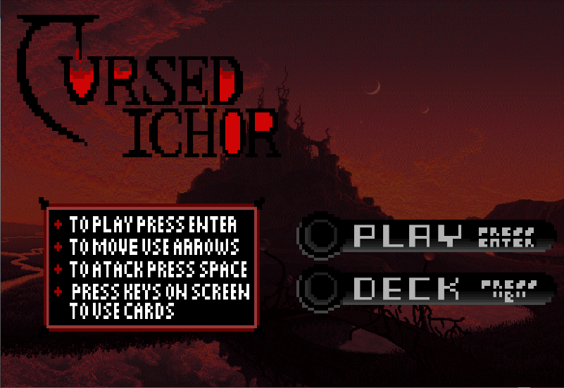

Cursed Ichor
Cursed Ichor is a 2.5D side-scrolling RPG game made during my Data Structures and Algorithms class in a team of 5. In this game you play as a hunter and have the ability to use cards to invoke magic while fighting monsters.
Team Leader / Programmer / UI Artist
As the Team Leader, I
- Created the base structure of the different classes and how each one ties to one another, whether it was a parent-child or a lone class
- Started a discord server where members can communicate to each other outside of class
- Broke up tasks that needed to be completed on a weekly basis and pinned it to our discord server for easy viewing
As one of the Programmers of this game, I
- Coded the movement through player input using acceleration
- Created an asteroid spawner that instantiates asteroids at a random visible area, while being at least a certain distance away from the player on a set timer after the initial starting asteroids
- Wrote my own AABB collision detection and ran it through a collision manager script
- Added an additional feature foreign to the original Asteroids game, through the use of a shield that uses up energy, which can be toggled on and off
As the UI Artist, I
- Came up with a general wireframed layout of where each component will go
- Took various reference images from google and created sprites that would fit well together